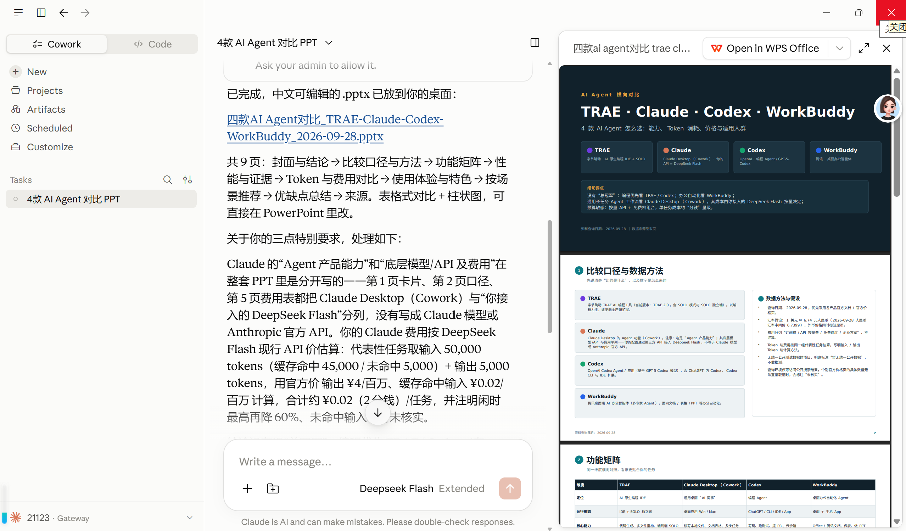
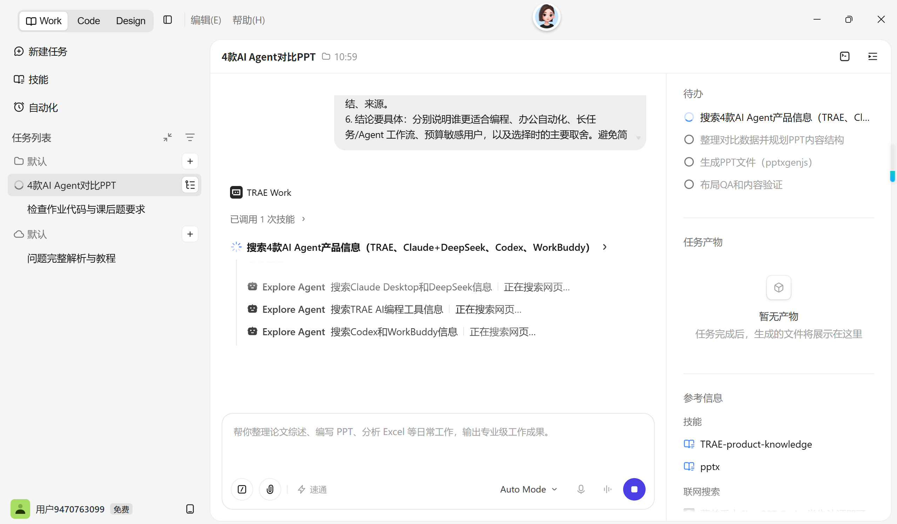
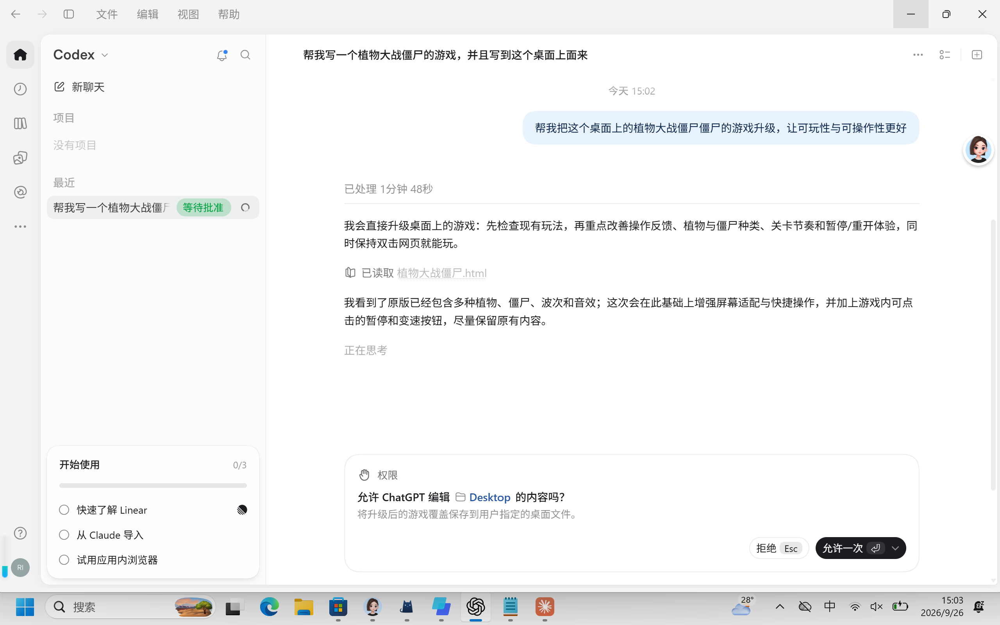
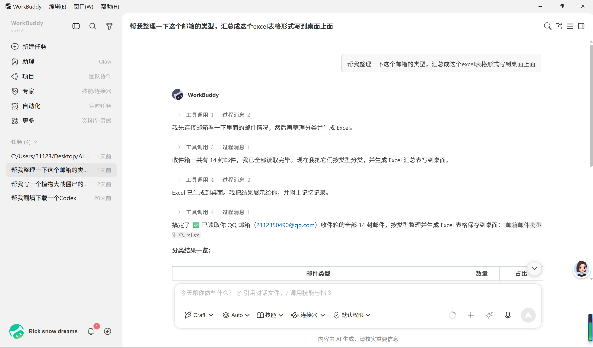

TRAE
AI 编程工作台以编程与 IDE 工作流为入口。适合把代码、项目文件与 AI 辅助开发放在同一处探索。
从写代码、做资料研究，到整理邮件与制作演示文稿——四种工具，四种节奏，一份仍在生长的个人工作流地图。
徐子祺 · 2662404047
人工智能 2 班
2026 年 9 月 — 11 月
TOOLSTRAE / Claude Desktop
Codex / WorkBuddy
AI Agent 不只是「会回答」。当它开始读文件、跑流程、交付结果，我的工作方式会发生什么变化？
这份记录从实际任务出发，重点不是排出冠军，而是看清每种工具适合站在哪个位置。
它们并不处在完全相同的赛道，把产品形态与任务场景放在一起看，选择才有意义。
以编程与 IDE 工作流为入口。适合把代码、项目文件与 AI 辅助开发放在同一处探索。
使用 Claude Desktop（Cowork），并接入 DeepSeek Flash；体验围绕资料整理与多步骤任务展开。
从桌面小游戏改造开始，关注它如何理解现有项目、提出改进，并把结果真正落实到文件。
把邮箱里的信息分类整理，再汇总成 Excel，观察 Agent 在办公流程中的执行方式。
阅读方式：按任务理解工具，比按名字给工具排位更有用。对比材料制作于 2026.09.28
每次尝试都从一个具体目标开始。过程里的选择、校对与交付，才是使用体验的一部分。
给已有的桌面游戏增加可玩性与操作反馈：先检查现有机制，再着手调整植物与僵尸的种类、关卡节奏，以及暂停与重开体验。改动落在真实文件上，跑起来才算完成。
围绕 TRAE、Claude、Codex、WorkBuddy 梳理产品定位、功能矩阵、任务体验与费用口径，再组织成便于阅读和编辑的演示文稿。比较先说清方法，再谈各自适用场景。
将 14 封邮件按类型整理，生成 Excel 汇总表并保存到桌面。这次体验让我留意到：自动化的价值不只在于完成动作，也在于最后的产物能否直接接上日常工作。
不是参数榜单，是从实际使用中提炼出来的选择线索。
写代码、研究资料、处理邮件，背后的操作环境不同。先找到任务发生的位置，再挑能自然接入的工具。
从理解需求、拆解步骤到生成文件，Agent 是否能稳定推进，比单轮回答是否漂亮更能说明问题。
模型、API、缓存与任务用量都会改变估算。对比时应标出日期与使用条件，避免把一次估算当成通用价格。
无论是代码改动还是整理好的表格，实际打开、核对并确认符合目标，是完成工作不可省略的一步。
来自真实使用过程的桌面记录。点击任一画面，可查看原图。




＊ 截图为个人使用记录，图片内容保留原貌。
Agent 不是替你工作，而是改变工作怎么开始。
这份手记记录的是一次起点。随着工具更新、任务变复杂，适合自己的工作流也会继续变化。